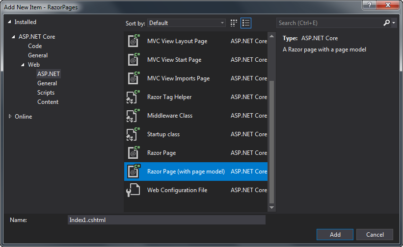

Razor 页面 PageModel 类的主要目的是在 UI 层（.cshtml view 文件）和页面的处理逻辑之间提供清晰的分离。 这种分离的优点在于：
- 它降低了 UI 层的复杂性，使其更易于维护。
- 它有助于自动化单元测试。
- 它为团队提供了更大的灵活性，因为一个成员可以在视图上工作，而另一个成员可以在处理逻辑上工作。
- 它鼓励用于特定目的的更小、可重用的代码单元，这有助于维护和可扩展性（即可以轻松添加应用程序的代码库以满足未来的额外需求）。
当您在添加新项目时选择 Razor 页面（带页面模型）选项时，将创建 PageModel 类：

PageModel 类在一个单独的类文件中声明 - 一个带有 .cs 扩展名的文件。
PageModel 类放置在与页面相同的命名空间中，默认情况下遵循模式 <default namespace>.<root folder name> 并以页面文件命名，“PageModel”为 一个后缀。
About.cshtml 的 PageModel 类将被命名为 AboutPageModel，并将在名为 About.cshtml.cs 的文件中生成。
就其特性和功能而言，PageModel 类是 控制器（Controllers） 和 视图模型 的组合。
控制器 （Controllers）
控制器 （Controllers）在与应用程序的表示层相关的许多设计和架构模式中具有特色。
它们最常见于模型-视图-控制器 (MVC) 模式，其中控制器可以实现为前控制器或页面控制器。
前端控制器定义 为“处理网站所有请求的控制器”。
在 ASP.NET MVC 实现中，前端控制器通常处理对由控制器名称的第一部分表示的网站中功能区域的所有请求。
例如，ProductController 将处理与 Product 实体或功能相关的所有请求。
页面控制器是“处理对特定页面或网站操作的请求的对象”。
Razor PageModel 类是页面控制器模式的实现。
页面控制器模式的特点是页面与其控制器之间存在一对一的映射关系。 页面控制器模式中控制器的作用是接受来自页面请求的输入，以确保应用对模型（数据）的任何请求操作，然后确定用于结果页面的正确视图。
视图模型
视图模型是表示模型设计模式的实现。 它是一个自包含的类，表示特定“视图”或页面的数据和行为。 视图模型模式广泛用于 MVC 应用程序开发，它主要表示数据，但通常很少有行为。 在 Razor Pages 中，PageModel 也是视图模型。
Razor Pages 有时被描述为实现 MVVM（模型、视图视图模型） 模式。 并不是。 MVVM 模式应用于表示和模型共享同一层的应用程序。 它在 WPF、移动应用程序开发和一些 JavaScript 库中很流行。 MVVM 的一个主要特性是视图会自动更新以反映对底层模型的更改。 这个过程通常由双向绑定和观察者模式的实现控制。在服务器端 Web 应用程序中，模型驻留在服务器上，而视图在客户端上。 您需要实现额外的复杂层，以在这种分布式架构中实现类似于观察者模式的任何内容。
默认模板
以下代码显示了当您使用 Razor Page（带页面模型）选项向 Razor Pages 应用程序添加新页面时为每个文件生成的内容：
(Index.cshtml)
@page
@model IndexModel
@{
}
(Index.cshtml.cs)
using System;
using System.Collections.Generic;
using System.Linq;
using System.Threading.Tasks;
using Microsoft.AspNetCore.Mvc;
using Microsoft.AspNetCore.Mvc.RazorPages;
namespace LearnRazorPages.Pages
{
public class IndexModel : PageModel
{
public void OnGet()
{
}
}
}
PageModel 类通过 @model 指令可用于视图文件。
生成的 PageModel 类继承自 Microsoft.AspNetCore.Mvc.RazorPages.PageModel，
它具有许多属性，使您能够处理与 HTTP 请求相关的各种项目，例如 HttpContext、Request、Response、ViewData、ModelState 和 TempData。
它还包括一系列方法，使您能够指定结果响应的类型，包括另一个 Razor 页面、文件、一些 JSON、字符串或重定向到另一个资源。
请求处理
PageModel 中的请求处理是在类似于 ASP.NET MVC 控制器上的 Action 方法的 handler 方法中执行的。
按照惯例，handler 方法选择基于将用于请求的 HTTP 动词与 handler 方法的名称匹配，使用模式 On<verb> 并可选地附加 Async 以表示该方法旨在异步运行。
GET 请求选择 OnGet 或 OnGetAsync 方法，POST 请求选择 OnPost 或 OnPostAsync 方法。
如果您想创建一个完全符合 REST 的应用程序，还支持所有其他 HTTP 动词（PUT、DELETE 等）。
匹配方式只看方法名。 不考虑返回类型和任何参数。 handler 方法的唯一其他规定是它必须是 public。
命名 handler 方法允许您为特定动词指定许多替代方法。 如果您的页面包含多个表单，每个表单都需要执行不同的过程，则您可能希望使用这些。
属性和方法
应用于 PageModel 类的属性和方法在 Razor 页面的 Model 属性中可用。
属性可以是简单的，如 string、int、DateTime 等，也可以是复杂的类，或组合。
如果您的页面旨在向数据库添加新产品，则您可能具有以下属性范围：
public string Name { get ; set; }
public SelectList Categories { get; set; }
public int CategoryId { get; set; }
您还可以将属性或方法添加到 PageModel 来处理用于显示的格式化值，以最大限度地减少添加到 Razor 页面的代码量。 以下示例显示了如何使用属性来格式化计算结果：
public List<OrderItems> Orders { get; set; }
public string TotalRevenue => Orders.Sum(o => o.NetPrice).ToString("f");
然后，您的 Razor 页面将只需要 @Model.TotalRevenue 将所有销售额的总额显示到小数点后两位，无需在 HTML 中进行 LINQ 计算。
您添加到 PageModel 的属性还使您能够以强类型方式开发表单，从而减少运行时错误的可能性。 例如，它们可用于标签和输入标签助手的 for 属性。
例如，它们可用于标签和输入标签助手的 for 属性。